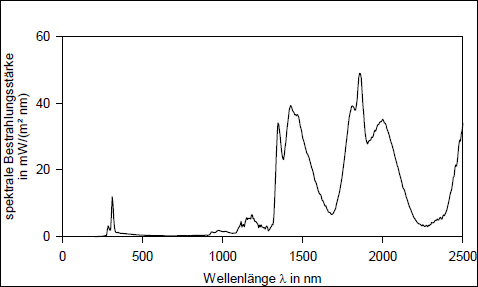
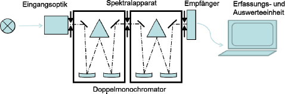
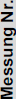
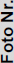

(1) Nach § 3 der OStrV hat der Arbeitgeber im Rahmen der Gefährdungsbeurteilung die auftretenden Expositionen durch künstliche optische Strahlung an Arbeitsplätzen zu ermitteln und zu bewerten. Er kann sich die notwendigen Informationen beim Wirtschaftsakteur nach § 2 Ziffer 29 ProdSG (Hersteller, Bevollmächtigter, Einführer oder Händler) der verwendeten Produkte/Arbeitsmittel oder mit Hilfe anderer zugänglicher Informationsquellen beschaffen.
(2) Lässt sich mit den vorhandenen Informationen nicht sicher feststellen, ob die Expositionsgrenzwerte (EGW) nach Abschnitt 5 dieser TROS IOS eingehalten werden, ist die Exposition durch Messungen oder Berechnungen nach § 4 OStrV festzustellen. Messungen und Berechnungen müssen nach dem Stand der Technik fachkundig geplant und durchgeführt werden. Die eingesetzten Messverfahren und Messgeräte sowie eventuell erforderliche Berechnungsverfahren müssen den Expositionsbedingungen hinsichtlich der betreffenden inkohärenten optischen Strahlung angepasst und geeignet sein, den Vergleich mit den EGW zu erlauben.
(3) Das Messen optischer Strahlungsexpositionen ist eine komplexe Aufgabe und erfordert entsprechende Fachkenntnisse und Erfahrungen (Fachkunde nach §§ 4 und 5 OStrV). Der Arbeitgeber kann damit fachkundige Personen beauftragen, falls er nicht selbst über die entsprechende Kenntnisse und die notwendige Messtechnik verfügt.
(4) Hilfen für die Planung und Durchführung von Messungen inkohärenter optischer Strahlung bieten die in dieser TROS IOS aufgeführten technischen Normen. Werden Messungen nach diesen Normen durchgeführt, wird diesbezüglich die Forderung der OStrV, den Stand der Technik zu beachten, erfüllt. Das Vorgehen bei Messungen und Bewertungen wird in den folgenden Abschnitten beschrieben.
Verfahren zur Messung und Bewertung von ultravioletten, sichtbaren und infraroten Strahlungsexpositionen durch künstliche Quellen an Arbeitsplätzen sind außerdem in den europäischen Normen DIN EN 14255-1 [2] und DIN EN 14255-2 [3] detailliert beschrieben.
(1) Im Rahmen der Gefährdungsbeurteilung ist zunächst festzustellen, ob zur Ermittlung der Exposition eine Messung oder Berechnung notwendig ist oder ob nicht bereits genügend Informationen vorhanden sind, um die Exposition auch ohne eine Messung ausreichend genau bestimmen zu können. Beispiele für Fälle ohne die Notwendigkeit einer Expositionsmessung sind:
(2) Messungen und Berechnungen sind bei sehr hohen Strahlungsexpositionen, wie zum Beispiel beim Elektroschweißen, nicht sinnvoll, da bekannt ist, dass die EGW bereits nach kurzer Zeit überschritten werden. In diesem Fall müssen Schutzmaßnahmen vor Aufnahme der Tätigkeit getroffen werden. Um die Wirksamkeit der Schutzmaßnahmen sicherzustellen, sind geeignete Informationen einzuholen. Gegebenenfalls sind Messungen zur Überprüfung der Wirksamkeit der Schutzmaßnahmen durchzuführen.
(3) Lässt sich mit den verfügbaren Informationen keine eindeutige Entscheidung treffen, ob die EGW eingehalten oder überschritten werden, dann ist eine Messung oder Berechnung der Exposition erforderlich. Hilfen zur Entscheidung, ob eine Messung notwendig ist, sind in Anlage 4 ("Beispiele für die Notwendigkeit von Expositionsmessungen und die Anwendung von Schutzmaßnahmen bei verschiedenen Tätigkeiten") zu finden.
(1) Vor der Messung ist eine detaillierte Analyse der Arbeitsaufgaben und des Arbeitsablaufs der exponierten Personen sowie der Expositionsbedingungen durchzuführen. Hierbei müssen sämtliche Tätigkeiten berücksichtigt werden, bei denen Personen inkohärenter optischer Strahlung ausgesetzt sein können. Dabei sind insbesondere zu prüfen:
(2) Für jede einzelne Tätigkeit müssen die Angaben vollständig genug sein, um die Exposition der Beschäftigten repräsentativ ermitteln und bewerten zu können. Tabelle 1 zeigt das Beispiel einer Arbeitsanalyse in Tabellenform.
| Tab. 1 | Beispiel einer Dokumentation der Arbeitsanalyse für die Glasbearbeitung mit Gasbrennern an einem Tischarbeitsplatz. Sie beinhaltet alle Tätigkeiten, auch die ohne Exposition. |
| Tätig- keit | Art der Tätigkeit | Aufenthaltsort der Beschäftigten | Exponierter Körperbereich | Häufig- keit je Schicht | geschätzte Dauer der Tätigkeit in min | geschätzte Dauer der Tätigkeit je Arbeits- schicht in min |
| A | Erwärmen des Glaswerk- stückes | Vor dem Gasbrenner | Augen, Gesicht, Unterarme | 100 | 2 | 200 |
| B | In Form blasen | In direkter Nähe zum Arbeitsplatz und dem Gasbrenner | Keine UV-Exposition, aber IR-Exposition von Augen, Gesicht, Unterarmen | 100 | 0,2 | 20 |
| C | Heraus- nehmen aus Form- schablone | In direkter Nähe zum Arbeitsplatz und dem Gasbrenner | Keine Exposition | 100 | 0,2 | 20 |
| D | Abstellen und Nehmen eines neuen Werkstückes | In direkter Nähe zum Arbeitsplatz und dem Gasbrenner | Keine Exposition | 100 | 0,5 | 50 |
| E | Sonstige Tätigkeiten ohne Exposition | Im Glasbearbei- tungsbereich | Keine Exposition | 1 | 190 | 190 |
| Summe der Tätigkeiten A–E: | 480 | |||||
(3) Wirkt Strahlung auf mehrere Arbeitnehmer in vergleichbarer Weise ein, dann kann die Analyse als repräsentativ für die persönlichen Expositionen dieser Beschäftigten angesehen werden. In diesem Fall reicht die Durchführung einer Expositionsmessung im Sinne einer Stichprobenerhebung nach § 4 Absatz 2 OStrV aus.
(1) Vor der Messung ist eine sorgfältige Planung durchzuführen. Dabei ist festzustellen, um welche Art von Strahlungsquellen es sich handelt und mit welcher Art von Strahlung gerechnet werden muss. Daraus ergibt sich, welches Messverfahren einzusetzen und wie die Messung durchzuführen ist.
(2) Wenn vor der Messung keine detaillierten Angaben über das Strahlungsspektrum erhältlich sind, dann ist eine Messung des optischen Strahlungsspektrums (spektrale Bestrahlungsstärke) hilfreich. Aus dem Spektrum ist zu entnehmen, in welchem Wellenlängenbereich mit einer hohen Exposition zu rechnen ist und welche Gefährdungen auftreten können (Abbildung 1). Das Spektrum ist so nahe wie möglich am Expositionsort zu bestimmen. Es muss nicht mit dem Strahlungsspektrum der Strahlungsquelle übereinstimmen, da sich das Strahlungsspektrum zwischen der Strahlungsquelle und der exponierten Person durch Streuung und Brechung oder Reflexion, Transmission und Absorption verändern kann.

Abb. 1 Gemessenes Strahlungsspektrum (spektral ungewichtet und linear) einer Gasflamme bei der Bearbeitung eines Glasrohrrohlings an einem Tischarbeitsplatz
(1) Im Abschnitt 5 dieser TROS IOS sind EGW für inkohärente optische Strahlung in folgenden Messgrößen festgelegt: Heff, HUVA, LB, EB, LR, LIR, EIR, HHaut. Es müssen in der Regel nicht die Expositionen für alle Messgrößen ermittelt werden, sondern nur für die Expositionen, bei denen die Einhaltung der EGW nicht sicher vorhergesagt werden kann (siehe Abschnitt 3.2 "Informationsermittlung"). Für welche Messgrößen die Expositionen zu ermitteln sind, ergibt sich aus der Analyse der Arbeitsaufgaben, dem Strahlungsspektrum und aus der Art der Gefährdung. Man kann einige der genannten Messgrößen direkt messen. Es gibt z. B. UV-Radiometer, die eine spektrale Wichtung der Strahlungsexposition nach der Wichtungsfunktion S(λ) durchführen. Mit Hilfe einer Start- und Stoppfunktion kann damit direkt die effektive Bestrahlung Heff während der Messdauer gemessen werden. Häufig werden jedoch Hilfsgrößen verwendet, aus denen die Strahlungsexpositionen in den gewünschten Größen erst berechnet werden müssen. So werden meist die effektive Bestrahlungsstärke Eeff mit der S(λ)-Wichtung und die Expositionsdauer Δt gemessen, um daraus die effektive Bestrahlung Heff als Produkt beider Messgrößen zu berechnen. Dazu gibt es z. B. UV-Messgeräte, die die spektrale S(λ)-Wichtung nachbilden und als Messergebnis direkt die effektive Bestrahlungsstärke Eeff ausgeben. Alternativ können für die Ermittlung spektral gewichteter Größen, wie Eeff, LB und LR, auch die spektrale Bestrahlungsstärke Eλ bzw. die spektrale Strahldichte Lλ im entsprechenden Wellenlängenbereich gemessen und mit den Wichtungsfunktionen S(λ) bzw. B(λ) und R(λ) berechnet werden. (Zu den Definitionen der Messgrößen siehe Abschnitt 5 dieser TROS IOS).
(2) Geht es um die Beurteilung der Verbrennungsgefahr der Haut bei der Einwirkung starker Wärmestrahlung, dann sind die Bestrahlungsstärke EHaut im Wellenlängenbereich von 380 nm bis 3 000 nm (siehe dazu Abschnitt 6.3) sowie die Expositionsdauer Δt zu messen. Aus EHaut und Δt ist die Bestrahlung HHaut zu berechnen und mit dem EGW zu vergleichen.
Als nächster Schritt ist ein geeignetes Messverfahren auszuwählen. Ein komplettes Verfahren besteht nicht nur aus den eingesetzten Messgeräten, sondern auch aus der Art, wie die Messungen durchgeführt werden, und aus der Bewertung der Ergebnisse. Bei der Auswahl des Messverfahrens sind neben dem Ziel der Messung auch die Expositionsbedingungen und die zu messenden Strahlungsgrößen zu berücksichtigen. Aus der Analyse der Arbeitsaufgaben ergibt sich auch, ob die personenbezogene Exposition mit Hilfe stationärer Messgeräte ermittelt werden kann, oder ob Messgeräte eingesetzt werden müssen, die von den Exponierten am Körper getragen werden.
(1) Bei den Messverfahren wird zwischen dem Spektralverfahren und dem Integralverfahren unterschieden. Eine der wichtigsten Anforderungen an die Messgeräte ist die einzuhaltende Messunsicherheit. Eine Messunsicherheit von ≤ 30 % wird für Verfahren gefordert, bei denen das Ergebnis mit dem EGW verglichen werden soll. Für Übersichtsmessungen ist eine Messunsicherheit von ≤ 50 % einzuhalten.
(2) Ein Messverfahren muss einen ausreichend großen Messbereich umfassen, sodass eine Entscheidung über die Einhaltung oder Überschreitung von EGW möglich ist. Gegebenenfalls können auch mehrere, sich im Messbereich ergänzende Messverfahren eingesetzt werden. Weitere Anforderungen beziehen sich auf die spektrale Empfindlichkeit des Empfängersystems, die Empfängerfläche, die Apertur, den Öffnungswinkel der Eingangsoptik und die Winkelabhängigkeit der Eingangsoptik. Die Mittelungsdauer (Integrationsdauer) der eingesetzten Geräte und die Messdauer für das gesamte Verfahren sind so zu wählen, dass eine Entscheidung über die Einhaltung oder Überschreitung der EGW möglich ist.
(3) Die zeitliche Abhängigkeit der Exposition muss durch das Messgerät erfasst werden können (Pulskriterium).
(4) Die festgelegten Anforderungen sind von den Messverfahren unter den vor Ort bei der Messung herrschenden Umgebungsbedingungen (Temperatur, Feuchte, Druck, Staub, elektromagnetische Felder, etc.) einzuhalten.
(5) Weitere Anforderungen sind hinsichtlich der Kalibrierung der Geräte, des empfindlichen Wellenlängenbereichs sowie der Schrittweite, der Bandbreite und der Empfindlichkeit gegenüber Streulicht bei Messungen des Strahlungsspektrums zu erfüllen.
(1) Bei diesem grundlegenden Verfahren wird mit Hilfe eines Spektralradiometers die spektrale Bestrahlungsstärke (bzw. die spektrale Strahldichte) in Abhängigkeit von der Wellenlänge gemessen. Für einen Vergleich mit den EGW müssen die Messergebnisse gegebenenfalls mit den Wichtungsfunktionen verrechnet werden. Hierbei ist jeweils noch auf die spektrale Bandbreite (1 nm, 2 nm oder 5 nm) und im UV-Bereich auf das Streulicht zu achten.
(2) Wesentliche Komponenten eines Spektralradiometers sind:
(3) Bei dem Spektralverfahren sind die Messgeräte in zwei Ausführungen zu unterscheiden:
(1) Bei diesem Gerätetyp wird in diskreten Schritten in einem vorgegebenen Spektralbereich jede Wellenlänge schrittweise abgetastet. Das Ergebnis ist ein Spektrum mit Informationen über die spektrale Strahlungsverteilung der Quelle. Ein Spektralradiometer kann als Einfach-Monochromator oder mit einem nachgeschalteten zweiten Monochromator als Doppelmonochromator ausgeführt sein. In Abbildung 2 ist schematisch der Aufbau eines Doppelmonochromators dargestellt.

Abb. 2 Schematischer Aufbau eines Doppelmonochromators
(2) Ein wesentlicher Unterschied zwischen diesen beiden Ausführungen liegt beim Doppelmonochromator in der deutlich besseren Streulichtunterdrückung von außerhalb der Messung gelegenen Wellenlängenbereichen. Für Messdienste, die UV-Messungen mit geringer Messunsicherheit von Strahlungsquellen mit hohen Anteilen im sichtbaren und IR-Bereich durchführen, wird aus diesem Grunde zur Unterdrückung der Falschlichtanteile die Verwendung eines Doppelmonochromators empfohlen. Bei Verwendung eines Einfachmonochromators kommt es zur Überbewertung der Exposition infolge des Streulichtanteils. Einfach-Monochromatoren kann man zur Messung von Strahlungsquellen anwenden, deren Emission im Wesentlichen auf den UV-Bereich begrenzt ist.
Vorteile:
Nachteile:
Bei diesem Gerätetyp ist in einem Einfach-Monochromator ein Gitter fest positioniert. Die Strahlung wird breitbandig auf ein Feld von Detektoren (z. B. auf ein Fotodioden-array) abgebildet. Jeder Detektor ist einer bestimmten Wellenlänge zugeordnet. Da bei dem Spektralradiometer mit Array-Detektor keine mechanische Abtastbewegung erforderlich ist, kann in sehr kurzer Zeit (Millisekunden) ein komplettes Spektrum aufgenommen werden. Das Messgerät ist somit für die Messung von Quellen mit zeitveränderlichen Bestrahlungsstärken geeignet.
Vorteile:
Nachteile:
(1) Beim Integralverfahren wird die Strahlung mit einem Strahlungsempfängersystem gemessen, das aus einem Messkopf mit Eingangsoptik, Filter oder einer Filterkombination und einem Detektor besteht. Durch die Auswahl von geeigneten Filtern und einem Detektor mit selektiver spektraler Empfindlichkeit wird eine Anpassung an einen definierten Spektralbereich oder an eine Bewertungsfunktion der zu messenden vorgesehenen fotobiologischen Größe erreicht. In der signalverarbeitenden Einheit wird der gemessene Wert mit der zugehörigen Korrektur berechnet und direkt angezeigt.
(2) Der apparative Aufwand ist beim Integralverfahren wesentlich geringer als beim Spektralverfahren. Einige kommerzielle Messsysteme sind nur für Übersichts- und Relativmessungen geeignet. Systematische Messabweichungen können bei bekannten Strahlungsquellen durch einen Korrekturfaktor verringert werden, der vom Hersteller für verschiedene Strahlungsquellen ermittelt worden ist.
(3) Für Arbeitsplatzmessungen sind angepasste Messgeräte nach dem Integralverfahren besser geeignet, da die Handhabung und Auswertung einfacher ist als beim Spektralverfahren.
Vorteile:
Nachteile:
Für Arbeitsbedingungen, bei denen die Einwirkung der optischen Strahlung stark schwankt, ist es vorteilhaft, kompakte Integralmessgeräte zu nutzen, die als Personendosimeter zum Einsatz kommen. Hierbei wird zwischen elektronischen, Polysulfonfilm- oder biologischen Dosimetern unterschieden.
Elektronische Dosimeter entsprechen prinzipiell den oben beschriebenen Integralradiometern. Ihre Sensoren können an unterschiedliche Bewertungsfunktionen angepasst sein. Typischerweise sind sie mit einer zeittaktbaren Speicherfunktion ausgerüstet. Damit haben sie den Vorteil, dass zu der ermittelten Strahlungsgröße der zeitliche Bezug registriert wird.
Vorteile:
Nachteile:
Fotochemische Sensoren sind vorrangig Folien aus organischen Materialien, die Änderungen optischer Eigenschaften im Material nur durch Einwirkung von UV-Strahlung nutzen. Durch eine spezifische Kalibrierung kann eine Anpassung an das Aktionsspektrum des zu untersuchenden fotobiologischen Effektes erreicht werden.
Vorteile:
Nachteile:
Das strahlungsempfindliche Material besteht vornehmlich aus einfachen biologischen Lebensformen (Bakteriensporen, Phagen, Zellen) oder Stoffwechselkomponenten (Pro-Vitamin D). Im biologischen Filmdosimeter werden immobilisierte Sporen des Bakteriums B. subtilis verwendet, deren Anzahl unter UV-Exposition durch zerstörte DNA dosisabhängig reduziert wird. Bestimmt wird als Dosismaß die Überlebensrate der Bakterien aus messbaren Stoffwechselprodukten.
Vorteile:
Nachteile:
(1) Bei der Durchführung der Strahlungsmessung ist darauf zu achten, dass keine Personen gefährdet werden. Bei hohen Bestrahlungsstärken oder Strahldichten kann eine Schädigung von Personen, die die Messung durchführen, schon nach kurzer Zeit eintreten. Daher ist für das Messpersonal eine separate Gefährdungsbeurteilung durchzuführen und entsprechende Schutzmaßnahmen sind zu ergreifen (Eigenschutz).
(2) Es ist zu prüfen, ob Fotos oder die Anfertigung von Skizzen der Expositionssituation vor oder während der Messung für die Dokumentation erforderlich sind.
(3) Die Messung muss repräsentativ für die Exposition der Beschäftigten sein. Hierzu kann es nötig sein, Einzelmessungen an verschiedenen Orten und in verschiedene Richtungen durchzuführen. Eine Alternative zur Messung mit ortsfesten Messgeräten ist bei Expositionen gegenüber UV-Strahlung der Einsatz von Dosimetern, die von der zu überwachenden Person am Körper getragen werden.
(4) Die Dauer der Messung muss sich an der Einwirkungsdauer der Exposition, an der Messgröße, an der Referenzzeit für den anzuwendenden Expositionsgrenzwert, am Messbereich des Verfahrens und am zeitlichen Verlauf der Strahlungsexposition orientieren.
Bei konstanter Bestrahlungsstärke kann die Messdauer unter praktischen Gesichtspunkten ausgewählt werden.
(5) Sind Beschäftigte gegenüber mehreren Strahlungsquellen exponiert, dann sind die Einzelexpositionen zu ermitteln. Aus den Einzelexpositionen kann die Gesamtbestrahlung berechnet werden, wenn der anzuwendende EGW als Bestrahlung vorliegt.
(1) Die Auswertung der Messergebnisse ist so durchzuführen, dass die Endergebnisse in den Strahlungsgrößen und Einheiten der zu Grunde zu legenden EGW vorliegen. Wurden beispielsweise eine UV-A Bestrahlungsstärke EUVA und eine Expositionsdauer Δt gemessen, dann wird daraus die UV-A Bestrahlung HUVA durch Multiplikation beider Größen berechnet und mit dem EGW der UV-A-Bestrahlung verglichen. Die Auswertung der Messergebnisse ist beispielhaft in Tabelle 2 dargestellt.
(2) Neben dem Messergebnis selbst ist auch die Messunsicherheit in die Betrachtung mit einzubeziehen.
| Tab. 2 | Beispiel einer Auswertung der Messergebnisse |
 | Messort |  | Abstand des Empfängers | UV- Bestrahlungs- stärke | tmax* bis | tmax* bis | entspr. Tätig- keit gemäß Tab. 1 | Bemerkungen | ||
| zum/ zur | in m | EUVA in mW/m² | Eeff in mW/m² | HUVA- EGW | Heff- EGW | |||||
| 1 | Vor dem Gasbrenner, Messung aus einer Höhe von 1,35 m über dem Boden in Richtung Gasflamme, hinter der Schutzscheibe | 1 | Gas- flam- me | 0,4 | 40 | 0,7 | > 8 h | > 8 h | A | Entspricht der Exposition des Kopfes (Augen und Haut) des Beschäftigten durch die bei der Bearbeitung des Glasrohrrohlings emittierte UV-Strahlung mit Schutzscheibe |
| 2 | Vor dem Gasbrenner, Messung aus einer Höhe von 1,15 m über dem Boden in Richtung Gasflamme | 2 | Gas- flam- me | 0,3 | 345 | 80 | > 8 h | 6 min | A | Entspricht der Exposition der Hände/Unterarme des Beschäftigten durch die beim Erwärmen der Glasrohrrohlinge emittierte UV-Strahlung |
| 3 | Vor dem Gasbrenner, Messung aus einer Höhe von 1,15 m über dem Boden in Richtung Gasflamme | 3 | Gas- flam- me | 0,2 | 600 | 120 | 4,6 h | 4 min | A | Entspricht der Exposition der Hände/Unterarme des Beschäftigten durch die beim Erwärmen der Glasrohrrohlinge emittierte UV-Strahlung, verkürztes Glaswerkstück |
| 4 | Vor dem Gasbrenner, Messung aus einer Höhe von 1,35 m über dem Boden in Richtung Gasflamme, ohne Schutzscheibe | 4 | Gas- flam- me | 0,4 | 286 | 85 | > 8 h | 6 min | B | Entspricht der Exposition des Kopfes (Augen und Haut) des Beschäftigten durch die bei der Bearbeitung des Glasrohrrohlings emittierte UV-Strahlung ohne Schutzscheibe |
| 5 | Vor dem Gasbrenner, Messung aus einer Höhe von 1,35 m über dem Boden in Richtung Gasflamme, hinter der Schutzbrille | 5 | Gas- flam- me | 0,35 | 11 | < 0,1 | > 8 h | > 8 h | C | Entspricht der Exposition der Augen des Beschäftigten durch die bei der Bearbeitung des Glasrohrrohlings emittierte UV-Strahlung mit Schutzbrille |
* Die Zeit tmax gibt die Zeitdauer bis zum Erreichen des EGW gemäß Spalte "UV-Bestrahlungsstärke" an.
(1) Die Exposition wird bewertet, indem das Ergebnis der Messung mit dem anzuwendenden EGW verglichen wird. Hierbei ist auch die Messunsicherheit zu berücksichtigen. Durch den Vergleich ergibt sich die Feststellung, ob der anzuwendende EGW eingehalten ist oder überschritten wird. Ist eine solche klare Feststellung nicht möglich, weil das Messergebnis in der Nähe des EGW liegt und die Messunsicherheit eine eindeutige Aussage nicht zulässt, dann sind zunächst Maßnahmen zur Verminderung der Exposition zu ergreifen. Anschließend ist die Messung zu wiederholen.
(2) Bei der Bewertung der Exposition sind alle Faktoren zu berücksichtigen, die zur Exposition beitragen oder für die Bewertung von Bedeutung sind. So ist z. B. bei Personen mit erhöhter Fotosensibilität die Einhaltung der EGW nach Abschnitt 5 dieser TROS IOS nicht ausreichend und eine weitergehende Reduzierung der Exposition notwendig. Gegebenenfalls ist eine arbeitsmedizinische Beratung erforderlich.
Die Auswahl und Anwendung von Schutzmaßnahmen ist Gegenstand des TROS IOS, Teil 3 "Maßnahmen zum Schutz gegenüber inkohärenter optischer Strahlung".
(1) Das Ergebnis einer Messung spiegelt die Expositionssituation zu dem Zeitpunkt wider, an dem die Messung durchgeführt wurde.
(2) Insbesondere bei folgenden Situationen können Wiederholungen notwendig werden:
(1) Die Ergebnisse aus der Informationsermittlung, der Messung und der Bewertung sind in einem Bericht zusammenzufassen. Dieser umfasst in der Regel folgende Angaben:
(2) Der Bericht ist Teil der Gefährdungsbeurteilung. Messberichte zur Gefährdungsbeurteilung von künstlicher UV-Strahlung sind 30 Jahre aufzubewahren, um eine retrospektive Beurteilung von Erkrankungsfällen sicherzustellen.